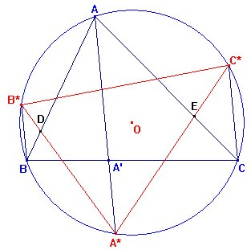
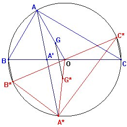
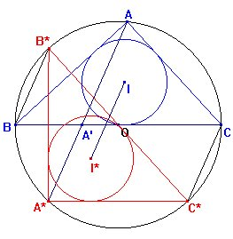

Sea la circunferencia circunscrita a un triángulo
rectángulo en el vértice A. Consideremos una ceviana arbitraria AA',
donde A' es su pie sobre el lado BC, y sea A*, el punto
donde corta la circunferencia circunscrita. Por los vértices B y
C, trazamos los segmentos BB* y CC* paralelos
a AA', y donde B* y C* son los puntos donde estos segmentos
cortan a la circunferencia circunscrita, cuyo centro es O. Probar
que:
|
||||||||||||||
|
Propuesto por Juan Bosco Romero Márquez
|
Solución de Francisco Javier García Capitán
 Podemos comprobar que este enunciado es cierto sin imponer que el triángulo ABC es rectángulo en A. En la figura de la derecha hemos llamado D y E a las intersecciones de AB, A*B* y AC, A*C* respectivamente, y podemos observar queÐB*A*A = ÐA*B*B (por ser AA* y BB* paralelas) = ÐBAA* (por ser ángulos inscritos que abarcan el mismo arco). De la misma forma ÐC*A*A = ÐCAA*. Sumando ambas igualdades obtenemos que ÐA* = ÐA. Además, al ser isósceles los triángulos BB*D y AA*D resulta que A*B*=AB, y de la misma forma A*C* = AC, por lo que los triángulo A*B*C, ABC tiene los ángulos ÐA* ,ÐA iguales y los lados comprendidos iguales, resultando entonces que los triángulos son congurentes, c.q.d. |
 Observemos que para cualquier triángulo ABC, sin necesidad de ser rectángulo, el triángulo A*B*C* es el simétrico de ABC respecto de la mediatriz de AA* (vemos que los acos AA* y BB*, medidos en sentido antihorario tienen el mismo punto medio). Entonces será también G* el simétrico de G y el segmento GG* será paralelo a AA*.En el caso del triángulo rectángulo, tendremos además que OA y OA* son medianas y que OG:OA = OG*:OA* = 1/3. Por tanto GG*:AA* = 1:3. Teniendo en cuenta que el triángulo A*B*C* es el simétrico de ABC respecto de la mediatriz de AA*, el incentro I* de A*B*C* es el simétrico del incentro I de ABC y así la recta II* es paralela a AA* y AA', y esto es cierto para cualquier triángulo ABC, sin necesidad de que ABC sea rectángulo. |
Hemos dicho que siempre el triángulo A*B*C* es el simétrico de ABC respecto de la mediatriz de AA* . El circuncentro O es común a todos los triángulos. Entonces: c1) El lugar de G* será una circunferencia con centro O
y radio OG. En ambos casos el lugar geométrico será la circunferencia completa si permitimos a A' variar en toda la recta BC. |
Ya hemos ido diciendo lo que ocurre en general en algunas de las cuestiones tratadas para el triángulo rectángulo. Repasemos y completemos:
Esto siempre es cierto.
GG* siempre es paralelo a AA* pero no tiene por que ser 1/3 de AA*. Investiguemos esto: En un triángulo cualquiera, ¿para qué punto A' se produce GG* = (1/3) AA*? Para responder a esta pregunta usamos coordenadas baricéntricas:
Estas cuestiones ya han quedado respondidas en general. c1) El lugar de G* será una circunferencia con centro O
y radio OG. |